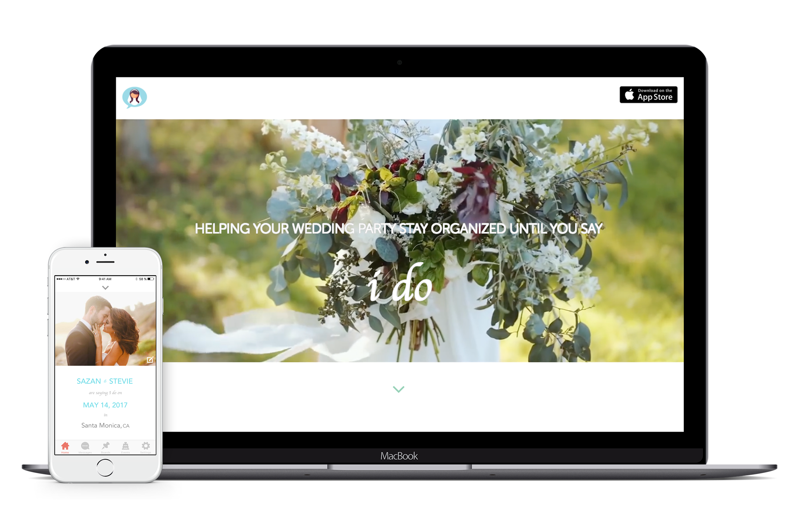

I DO - WEDDING APP
Overview
“I Do” is an app I designed to help solve the communication and organization problems prevalent in wedding planning. I went through several phases of iterations and user testing to create the final prototype. Come see my process.
PROBLEM: Weddings are a hard time for couples to stay in constant communication and organized with the entire wedding party. So what would allow a couple and their wedding party to stay organized and informed?
SOLUTION: This app caters to every couples’ unique wedding. This app eases the frustrations and helps make wedding planning seamless by breaking the barriers of miscommunication, unfamiliarity, and disorganization by keeping track of conversations, notes, links, and pins.
COMPETITIVE APPS: The Knot, Wiithyu, Appy Couple, Evernote, Pinterest, Google Calendar
Ideation
Flows: This is a flow I created to solve the problems without getting too wrapped up on the visuals.
Wireframes and User Testing
I created lo-fi wireframes from the flows then did several iterations of user testing before I created the mock ups.
USABILITY TESTING: I tested the wireframes on several users and made notes about what changes to make as you can see above. I went through several iterations of this testing.
Visuals
MOCKUPS: After knowing what styles I wanted, I began designing the final mockups. I went through several tweaks based on feedback.